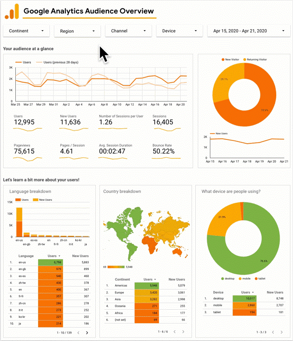
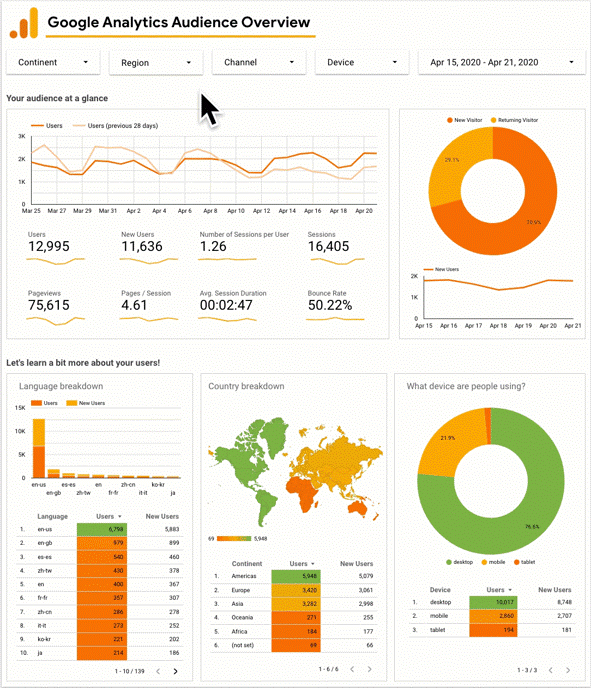

Analytics & Dashboards
Transforma tus analisis y estadisticas en papel a archivos digitales automatizados
 

Solutions
With state-of-the-art tools such as Power Bi or Looker Studio, we analyze the available databases. We transform data, clean databases and perform analysis to ensure business understanding. We generate graphic dashboards that allow access to general and specific business data. Allowing macromanagement and micromanagement to be carried out in a short time. Also the instant sharing of these graphics with any member of the company, without the need to be sending documents by email or presenting them physically.
Contact Us Now